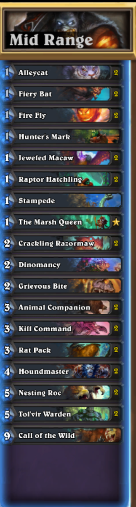

Mid Range Quester
Overview
This decks goal is to complete the quest to get that nice 5 mana 8-8 and then finish with On The Hunt.
Gameplay
TO mulligan for this deck try for one drops. I you have other cards to play then jewled Mcaw you should play those that turn as it can be a one turn play. To play this deck you wantto control the board until you get to turn 8 where either you lost or won or about to finish with call of the wild. The best cards to look at is CracklingRazormaw
Matchups
This deck struggles against taunt heavy decks it is worth looking into poisonous effects via adapt or hunters mark to get past those bighard cards. It is easy to tell when you are gonna lose so you can pump out a lot of games with this deck
